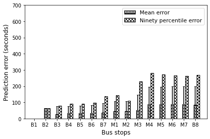
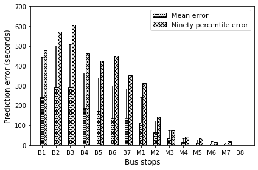

Prediction error for different bus-stops
In this module, the plot of error in prediction is obtained for the north bound as well as the south bound direction.
[1]:
from pymongo import MongoClient
import math
import pprint
#import geocoder
import pprint
import numpy as np
import matplotlib.pyplot as plt
import os
[2]:
def PredictionError_NorthBound(BusStopsCount, TripStartTime, Bound, ResultPathDir, ResultPathDir_Np, UseMongoDB):
'''
input: The bus-stop count, trip start time, direction, and directory path of result folder
output: None
function: It extracts the prediction records from the MongoDB database and computes the
prediction error for different bus-stops of the route on the north bound direction.
'''
PredictionErrorAggAtIDListMean =[]
PredictionErrorAggAtIDListSTD =[]
PredictionErrorAggAtIDListMax =[]
PredictionIndexList =[]
if UseMongoDB==True:
PredictionErrorLists = [record for record in
con[RouteName]['PredictionErrorForSubStopsV2.'+TripStartTime+'.'+Bound].find()]
else:
PredictionErrorLists = np.load(f'{ResultPathDir_Np}/{RouteName}/PredictionErrorForSubStopsV2.{TripStartTime}.{Bound}.npy',
allow_pickle=True)
for BusStopIndex in range(BusStopsCount):
PredictionErrorList = [rec for rec in PredictionErrorLists if rec['id']==BusStopIndex]
if len(PredictionErrorList)!=0:
if(PredictionErrorList[0]['PredictionAvailable']==True):
#MeanPredictionErrorMean,STDPredictionErrorMean,MaxPredictionErrorMean=PredictionErrorAtIDNorth(BusStopIndex,TripStartTime,Bound)
PredictionErrorAggAtIDListMean.append(PredictionErrorList[0]['PredictionErrorAggregateMean']/1000)
PredictionErrorAggAtIDListSTD.append(PredictionErrorList[0]['PredictionErrorAggregateSTD']/1000)
#PredictionErrorAggAtIDListMax.append(PredictionErrorList[0]['PredictionErrorAggregateMax']/1000)
PredictionErrorAggAtIDListMax.append(PredictionErrorList[0]['PredictionErrorAggregateNinetyPercentileValue']/1000)
PredictionIndexList.append(BusStopIndex)
# In[18]:
yticksList = [0,100,200,300,400,500,600,700]
xticksList = [0,1,2,3,4,5,6,7,8,9,10,11,12,13,14]
xticksLabel = ['B1','B2','B3','B4','B5','B6','B7','M1','M2','M3','M4','M5','M6','M7','B8']
xLimit=(-0.8,15)
# In[20]:
ax1 = plt.subplot(1,1,1)
ax1.set_xlim(xLimit)
ax1.bar(PredictionIndexList,PredictionErrorAggAtIDListMean,1/(2*2),yerr = [np.zeros(BusStopsCount-1),PredictionErrorAggAtIDListSTD],hatch='oooo',label='Mean error',edgecolor='k',facecolor='None',capsize=2)
PredictionIndexList[:]=[x+1/4 for x in PredictionIndexList]
ax1.bar(PredictionIndexList,PredictionErrorAggAtIDListMax,1/(2*2),hatch='xxxx',label='Ninety percentile error',edgecolor='k',facecolor='None')
plt.legend(fontsize=11)
plt.yticks(yticksList)
plt.xticks(xticksList,xticksLabel)
plt.xlabel('Bus stops',fontsize=12)
plt.ylabel('Prediction error (seconds)',fontsize=12)
#plt.title('Prediction error v/s bus stop')
plt.tick_params(axis='both', which='major', labelsize=10)
plt.tick_params(axis='both', which='minor', labelsize=10)
plt.tight_layout()
plt.savefig(f'{ResultPathDir}PredictionError_NorthBound.png',format='png',dpi=600)
plt.show()
[3]:
def PredictionError_SouthBound(BusStopsCount, TripStartTime, Bound, ResultPathDir, ResultPathDir_Np, UseMongoDB):
'''
input: The bus-stop count, trip start time, direction, and directory path of result folder
output: None
function: It extracts the prediction records from the MongoDB database and computes the
prediction error for different bus-stops of the route on the south bound direction.
'''
PredictionErrorAggAtIDListMean =[]
PredictionErrorAggAtIDListSTD =[]
PredictionErrorAggAtIDListMax =[]
PredictionIndexList =[]
if UseMongoDB==True:
PredictionErrorLists = [record for record in
con[RouteName]['PredictionErrorForSubStopsV2.'+TripStartTime+'.'+Bound].find()]
else:
PredictionErrorLists = np.load(f'{ResultPathDir_Np}/{RouteName}/PredictionErrorForSubStopsV2.{TripStartTime}.{Bound}.npy',
allow_pickle=True)
for BusStopIndex in range(BusStopsCount):
PredictionErrorList = [rec for rec in PredictionErrorLists if rec['id']==BusStopIndex]
if len(PredictionErrorList)!=0:
if(PredictionErrorList[0]['PredictionAvailable']==True):
#MeanPredictionErrorMean,STDPredictionErrorMean,MaxPredictionErrorMean=PredictionErrorAtIDNorth(BusStopIndex,TripStartTime,Bound)
PredictionErrorAggAtIDListMean.append(PredictionErrorList[0]['PredictionErrorAggregateMean']/1000)
PredictionErrorAggAtIDListSTD.append(PredictionErrorList[0]['PredictionErrorAggregateSTD']/1000)
#PredictionErrorAggAtIDListMax.append(PredictionErrorList[0]['PredictionErrorAggregateMax']/1000)
PredictionErrorAggAtIDListMax.append(PredictionErrorList[0]['PredictionErrorAggregateNinetyPercentileValue']/1000)
PredictionIndexList.append(BusStopIndex)
yticksList = [0,100,200,300,400,500,600,700]
xticksList = [0,1,2,3,4,5,6,7,8,9,10,11,12,13,14]
xticksLabel = ['B1','B2','B3','B4','B5','B6','B7','M1','M2','M3','M4','M5','M6','M7','B8']
xLimit=(-0.8,15)
# In[23]:
ax1=plt.subplot(1,1,1)
ax1.set_xlim(xLimit)
plt.bar(PredictionIndexList,PredictionErrorAggAtIDListMean,1/(2*2),yerr = [(0,0,0,0,0,0,0,0,0,0,0,0,0,0),PredictionErrorAggAtIDListSTD],hatch='oooo',label='Mean error',edgecolor='k',facecolor='None',capsize=2)
PredictionIndexList[:]=[x+1/4 for x in PredictionIndexList]
plt.bar(PredictionIndexList,PredictionErrorAggAtIDListMax,1/(2*2),hatch='xxxx',label='Ninety percentile error',edgecolor='k',facecolor='None')
plt.legend(fontsize=11)
plt.yticks(yticksList)
plt.xticks(xticksList,xticksLabel)
plt.xlabel('Bus stops',fontsize=12)
plt.ylabel('Prediction error (seconds)',fontsize=12)
#plt.title('Prediction error v/s bus stop')
plt.tick_params(axis='both', which='major', labelsize=10)
plt.tick_params(axis='both', which='minor', labelsize=10)
plt.tight_layout()
plt.savefig(f'{ResultPathDir}PredictionError_SouthBound.png',format='png',dpi=600)
plt.show()
Execution of the code
[4]:
from pathlib import Path
'''For directory management'''
path = Path(os.getcwd())
OneLevelUpPath = path.parents[0]
RouteName='Git_ISCON_PDPU'
NpPathDir = os.path.join(str(OneLevelUpPath), 'data','NpData')
#ResultPathDir = os.path.join(os.getcwd(), 'Result','PredictionError','')
ResultPathDir = os.path.join(str(OneLevelUpPath), 'results','PredictionError','')
ResultPathDir_Np = os.path.join(str(OneLevelUpPath), 'results','NpData','')
[5]:
'''
ProjectDataUsed = True
UsedPreTrained = False
UseMongoDB = True
'''
#'''
ProjectDataUsed = True
UsedPreTrained = True
UseMongoDB = False
#'''
[6]:
con = MongoClient()
[7]:
if UseMongoDB==True:
TripStartTimeAggregate= [Tr['TripStartTimeBound'] for Tr in
con [RouteName]['TripStartTimeAggregate'].find()]
Bound = TripStartTimeAggregate[0][0][1]
BusStopRecords = [rec for rec in con[RouteName][f'BusStops.{Bound}Bound'].find()]
else:
TripStartTimeAggregate_Record = np.load(f'{NpPathDir}/{RouteName}/TripStartTimeAggregate.npy',
allow_pickle=True)
TripStartTimeAggregate = [rec['TripStartTimeBound'] for rec in TripStartTimeAggregate_Record]
Bound = TripStartTimeAggregate[0][0][1]
BusStopRecords = np.load(f'{NpPathDir}/{RouteName}/BusStops.{Bound}Bound.npy',
allow_pickle=True)
BusStopsCount = len(BusStopRecords)
print('Bound, BusStopsCount', Bound, len (BusStopRecords))
Bound, BusStopsCount North 15
[8]:
TripStartTime = TripStartTimeAggregate[0][0][0]
Bound = TripStartTimeAggregate[0][0][1]
PredictionError_NorthBound(BusStopsCount, TripStartTime, Bound, ResultPathDir, ResultPathDir_Np, UseMongoDB)

[9]:
TripStartTime = TripStartTimeAggregate[0][1][0]
Bound = TripStartTimeAggregate[0][1][1]
if UseMongoDB==True:
BusStopRecords = [rec for rec in con[RouteName][f'BusStops.{Bound}Bound'].find()]
else:
BusStopRecords = np.load(f'{NpPathDir}/{RouteName}/BusStops.{Bound}Bound.npy',
allow_pickle=True)
BusStopsCount = len(BusStopRecords)
print('StartHour, Bound, BusStopsCount', TripStartTime, Bound, len (BusStopRecords))
StartHour, Bound, BusStopsCount 18 South 15
[10]:
PredictionError_SouthBound(BusStopsCount, TripStartTime, Bound, ResultPathDir, ResultPathDir_Np, UseMongoDB)
